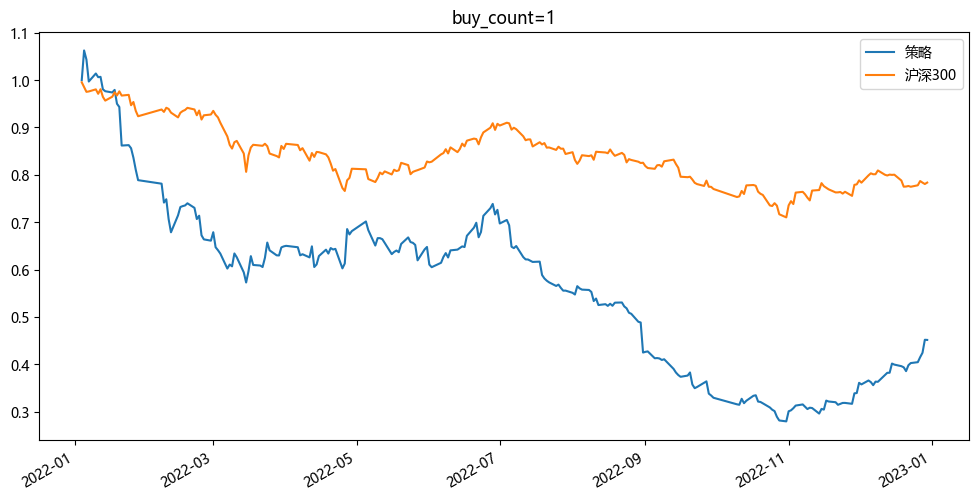
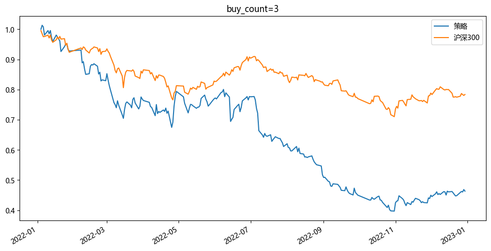
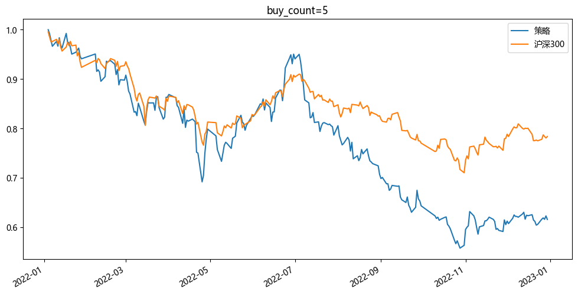
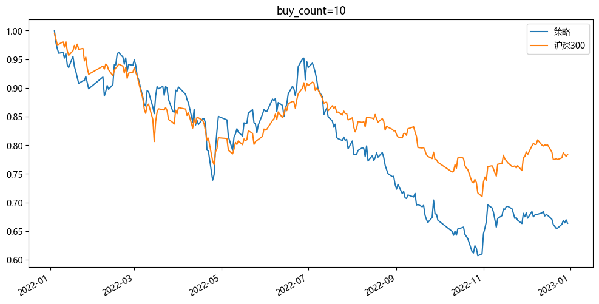
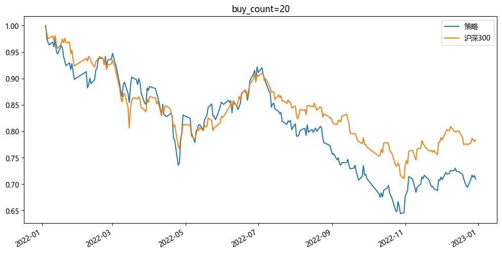

来源：2.backtrader.ipynb。股票池是 2022-01-01 的沪深 300 成分，由 Tushare 取权重，共 300 只。因子是 alphas/Alphas191/2022/alpha191.csv。
每个调仓日买因子最高的 buy_count 只，权重 1/buy_count，下单再乘 0.95。有信号的交易日都换仓。初始资金 100000。买卖费率都是成交额的 0.00035。基准是沪深 300，按策略同一批交易日对齐。
行情从 2022-01-04 到 2022-12-30。下面五次只改 buy_count。收益率是期末对数收益。最高收益率是累计净值最高点减 1，为简单收益。年化按日均对数收益乘 252 再还原。最大回撤为负。夏普按日收益、无风险利率 0、再年化。
每个调仓日买因子最高的 1 只，权重 1/1，下单再乘 0.95。调仓日 232 天，每天 1 只。期末 45148.97，相对期初的简单收益是 -54.85%。

| 名称 | 年度 | 收益率 | 日均收益率 | 年化收益率 | 最高收益率 | 最大回撤(%) | 夏普比率 |
|---|---|---|---|---|---|---|---|
| 策略 | 2022 | -0.795203 | -0.003286 | -0.563105 | 0.062623 | -73.693611 | -1.572075 |
| 沪深300 | 2022 | -0.243764 | -0.001007 | -0.224182 | -0.004576 | -28.652487 | -1.143939 |
每个调仓日买因子最高的 3 只，权重 1/3，下单再乘 0.95。调仓日 232 天，每天 3 只。期末 46335.17，相对期初的简单收益是 -53.66%。

| 名称 | 年度 | 收益率 | 日均收益率 | 年化收益率 | 最高收益率 | 最大回撤(%) | 夏普比率 |
|---|---|---|---|---|---|---|---|
| 策略 | 2022 | -0.769269 | -0.003179 | -0.551146 | 0.013220 | -60.811788 | -2.067851 |
| 沪深300 | 2022 | -0.243764 | -0.001007 | -0.224182 | -0.004576 | -28.652487 | -1.143939 |
每个调仓日买因子最高的 5 只，权重 1/5，下单再乘 0.95。调仓日 232 天，每天 5 只。期末 61557.88，相对期初的简单收益是 -38.44%。

| 名称 | 年度 | 收益率 | 日均收益率 | 年化收益率 | 最高收益率 | 最大回撤(%) | 夏普比率 |
|---|---|---|---|---|---|---|---|
| 策略 | 2022 | -0.485192 | -0.002005 | -0.396640 | 0.000000 | -44.248711 | -1.409814 |
| 沪深300 | 2022 | -0.243764 | -0.001007 | -0.224182 | -0.004576 | -28.652487 | -1.143939 |
每个调仓日买因子最高的 10 只，权重 1/10，下单再乘 0.95。调仓日 232 天，每天 10 只。期末 66359.01，相对期初的简单收益是 -33.64%。

| 名称 | 年度 | 收益率 | 日均收益率 | 年化收益率 | 最高收益率 | 最大回撤(%) | 夏普比率 |
|---|---|---|---|---|---|---|---|
| 策略 | 2022 | -0.410091 | -0.001695 | -0.347560 | 0.000000 | -39.294556 | -1.338585 |
| 沪深300 | 2022 | -0.243764 | -0.001007 | -0.224182 | -0.004576 | -28.652487 | -1.143939 |
每个调仓日买因子最高的 20 只，权重 1/20，下单再乘 0.95。调仓日 232 天，每天 20 只。期末 70963.02，相对期初的简单收益是 -29.04%。

| 名称 | 年度 | 收益率 | 日均收益率 | 年化收益率 | 最高收益率 | 最大回撤(%) | 夏普比率 |
|---|---|---|---|---|---|---|---|
| 策略 | 2022 | -0.343011 | -0.001417 | -0.300357 | 0.000000 | -35.575357 | -1.270929 |
| 沪深300 | 2022 | -0.243764 | -0.001007 | -0.224182 | -0.004576 | -28.652487 | -1.143939 |